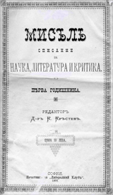
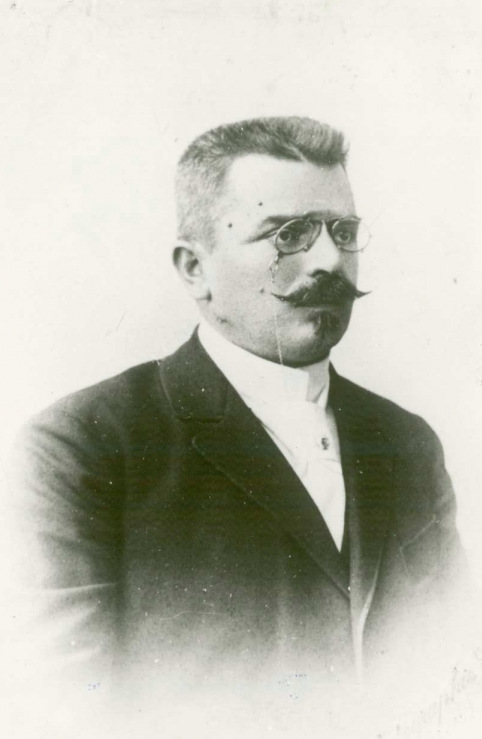
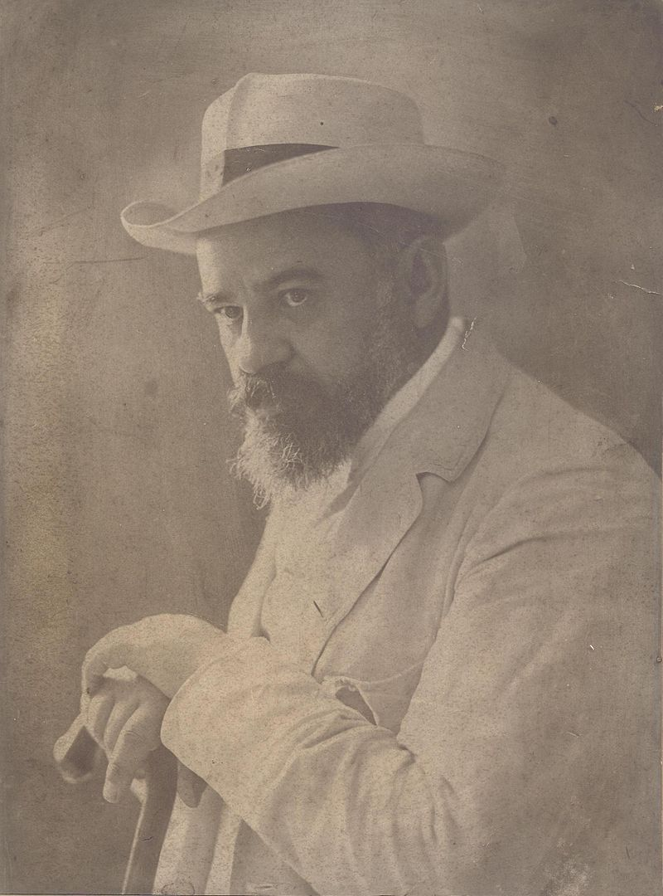
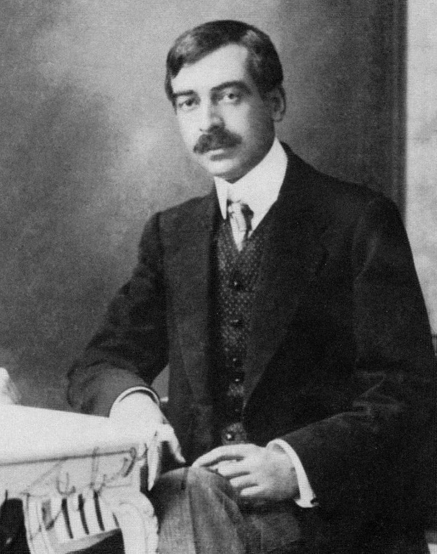
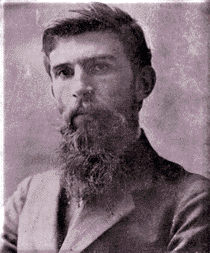

Културната програма на кръга Мисъл съдържа ново разбиране за ролята на изкуството като основен фактор за култивиране и одухотворяване на личността. Социалната роля на изкуството не се отрича, но за доминираща се провъзгласява чисто художествената му функция. Затова модернистите са убедени, че само високо художествената творба може да осъществи и социална функция, да въздейства благоприятно на обществото. В списание Мисъл често се пише, че изкуството може да изпълнява обществените си задачи главно чрез своята художественост.
„Мисъл“ е българско списание, издавано в периода 1892 и 1907 г.
Около списание „Мисъл“, дълго след като то се е утвърдило, възниква така нареченият кръг „Мисъл“. Кръгът „Мисъл“, наречен по името на списанието, включва 4 творци – д-р Кръстев, П. П. Славейков, П. Ю. Тодоров и П. К. Яворов. Внася новите насоки на индивидуализма и естетизма в българската литература. Тематиката на творбите е философска и психологическа, на преден план е изведена личността. Славейков мечтае за литература, която възпява „човека в българина“ – като противовес на Вазовата традиция до този момент, която възпява българина.

Д-р Кръстьо Котев Кръстев е първият български професионален лит. критик и лит. историк след Освобождението, писател, публицист, преводач, общественик, участник в литературния кръг „Мисъл“. Д-р Кръстев е сред онези интелектуалци, които решително се обявяват срещу включването на България в Първата световна война, но след като през октомври 1915 г. това е факт, развива активна културно-просветна дейност в родния си град.

Пенчо Петков Славейков е български поет, един от участниците в литературния кръг „Мисъл“, наред с Кръстьо Кръстев, Петко Тодоров и Пейо Яворов. Той е най-малкият син на поета и политик Петко Славейков. Брат е на политиците Иван Славейков и Христо Славейков. Роден е на 27 април 1866 г. в град Трявна, в семейството на Ирина и Петко Славейкови.

Пейо Тотев Крачолов, по-известен като Пейо Яворов, е български поет символист и революционер, войвода на Вътрешната македоно-одринска революционна организация, смятан за един от най-големите български поети на 20 век. Използва псевдоними като Джемо, И. Крачев, Отело, Пейчо. Роден е в град Чирпан на 13 януари.

Петко Юрданов Тодоров е роден в Елена в заможно чорбаджийско семейство с широки културни интереси, което е в роднински връзки със семейството на Стоян Михайловски. Баща му Юрдан Теодоров е член на Общия вилаетски съвет на Дунавския вилает от 1866 г., а през 1876 г. е назначен за съдия по делата на заловени участници в четите на Бачо Киро и Цанко Дюстабанов.
